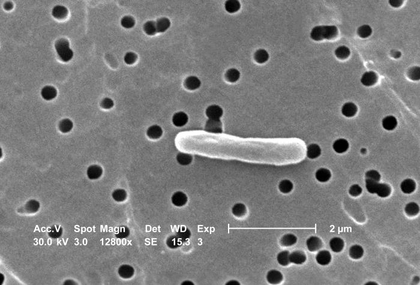

ДЛЯ КЛИНИЧЕСКОГО ФАРМАКОЛОГА
Знать возбудителя.
Понимать устойчивость.
Бактерии, антибиотики и механизмы резистентности —
в одном атласе. Изучайте связи. Проверяйте себя.

EUCAST · IDSA / сверка 05.11.2026
ОТ ВИДА К ФЕНОТИПУ
Карта чувствительности
Учебная модель, не антибиотикограмма пациента. WT не означает чувствительность ко всем препаратам. «Суперрезистентный» — не стандартная категория; особо устойчивые профили здесь не приравниваются к XDR/PDR.
Одна строка — один профиль. Нажмите на название или ячейку для объяснения и источника.R₀ ≠ Rₐ · S* ≠ результат AST